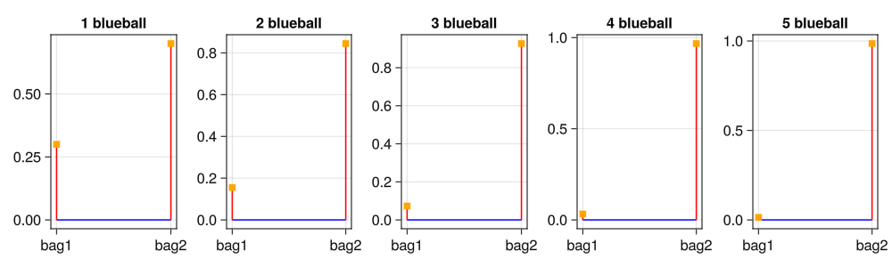

flowchart LR
twoBags("👜")==b1:1/2 ==>Bag1("🔴 🔴 🔴 🔴 🔴 🔴 \n 🔵 🔵 🔵")
twoBags("👜")==b1:1/2==>Bag2("🔴 🔴 🔴\n 🔵 🔵 🔵 🔵 🔵 🔵 🔵 ")
Bag1==b11:3/10==>Obs11("🔵")
Bag1==b12:3/10^2==>Obs12("🔵 🔵")
Bag1==b13:3/10^3==>Obs13("🔵 🔵 🔵 ")
Bag1==b14:3/10^4==>Obs14("🔵 🔵 🔵 🔵")
Bag1==b15:3/10^5==>Obs15("🔵 🔵 🔵 🔵 🔵")
Bag2==b21:7/10==>Obs21("🔵")
Bag2==b22:7/10^2==>Obs22("🔵 🔵")
Bag2==b23:7/10^3==>Obs23("🔵 🔵 🔵 ")
Bag2==b24:7/10^4==>Obs24("🔵 🔵 🔵 🔵")
Bag2==b25:7/10^5==>Obs25("🔵 🔵 🔵 🔵 🔵")
4-bags
简介
参考: hakank-bayes-code:book_bags
有两个包, 分别为 Bag1:[🔴:7,🔵:3],Bag2:[🔴:3,🔵:7] 两者被选中的机会相同,从中挑出一个包,并抽出球,在有放回的条件下: 分别计算在抽出 1:5 个蓝色球时 来自两个包的概率
1. 概率路径图
1.1 基于概率路径图的计算
以取出两个蓝色球为例在 Figure 1 中有两条路径
b1->b12b2->b22
取出两个蓝色球的概率为两条路径的概率和,每条路径的概率除以总概率就是来自某个包的概率 取出其他求的概率计算类似
1.2 computing
定义基本概率
Code
"选中包的概率"
select_bag=1//2
b1blue=3;b1red=7;b1total=b1blue+b1red
b2blue=7;b2red=3;b2total=b2blue+b2red
"从 bag1中抽出n个蓝色球的概率"
pick_n_bag1=[(b1blue/b1total)^i for i in 1:5]
"从 bag2中抽出n个蓝色球的概率"
pick_n_bag2=[(b2blue/b2total)^i for i in 1:5]
@info "pick 1:5 🔵 from bag1"=> pick_n_bag1
@info "pick 1:5 🔵 from bag2"=> pick_n_bag2[ Info: "pick 1:5 🔵 from bag1" => [0.3, 0.09, 0.027, 0.0081, 0.0024299999999999994]
[ Info: "pick 1:5 🔵 from bag2" => [0.7, 0.48999999999999994, 0.3429999999999999, 0.24009999999999995, 0.16806999999999994]计算概率
Code
using DataFrames,GLMakie
name1=Vector{String}(undef, 5)
b1arr=Vector{Real}(undef, 5)
b2arr=Vector{Real}(undef, 5)
for idx in 1:5
total=pick_n_bag1[idx]+pick_n_bag2[idx]
name1[idx]="取出$(idx)个🔵"
b1arr[idx]=pick_n_bag1[idx]/total
b2arr[idx]=pick_n_bag2[idx]/total
end
DataFrame(c1=name1,bag1=b1arr,bag2=b2arr)5×3 DataFrame
| Row | c1 | bag1 | bag2 |
|---|---|---|---|
| String | Real | Real | |
| 1 | 取出1个🔵 | 0.3 | 0.7 |
| 2 | 取出2个🔵 | 0.155172 | 0.844828 |
| 3 | 取出3个🔵 | 0.072973 | 0.927027 |
| 4 | 取出4个🔵 | 0.032635 | 0.967365 |
| 5 | 取出5个🔵 | 0.0142522 | 0.985748 |
绘图
Code
fig=Figure(resolution=(1000,300))
for idx in 1:5
local ax=Axis(fig[1,idx];title="$idx blueball")
ax.xticks=(1:2,["bag1","bag2"])
local total=b1arr[idx]+b2arr[idx]
@info [b1arr[idx],b2arr[idx]]
stem!(ax,1:2,[b1arr[idx],b2arr[idx]]; trunkcolor = :blue, marker = :rect,stemcolor = :red, color = :orange)
end
fig[ Info: [0.3, 0.7]
[ Info: [0.15517241379310345, 0.8448275862068965]
[ Info: [0.07297297297297299, 0.927027027027027]
[ Info: [0.03263497179693796, 0.967365028203062]
[ Info: [0.014252199413489739, 0.9857478005865103]
连续取出的蓝色球越多, 选出的包为:bag2 的概率越大, 因为初始条件中,bag2 中蓝色球 占比大
2. turing workflow
2.1 define turing model
Code
include("utils.jl")
using Turing,Distributions
@model function book_bags(num_blue_chips=2)
bag1 = 1 # 3 blue 7 red
bag2 = 2 # 7 blue 3 red
bag ~ Categorical([0.5,0.5])
blue = 1
red = 2
n = 5
draw = tzeros(num_blue_chips)
for d in 1:num_blue_chips
if bag == bag1
draw[d] ~ Categorical([0.3,0.7])
else
draw[d] ~ Categorical([0.7,0.3])
end
end
# We've seen $test number of blue chips
for d in 1:num_blue_chips
true ~ Dirac(draw[d] == blue)
end
endbook_bags (generic function with 4 methods)2.2 MCMC sampling
Code
num_chains = 4
for idx in 1:5
local model = book_bags(idx)
chs = sample(model, MH(), 10_000)
show_var_dist_pct(chs,:bag,["bag1","bag2"])
end Sampling: 74%|██████████████████████████████▌ | ETA: 0:00:00Sampling: 100%|█████████████████████████████████████████| Time: 0:00:00
Sampling: 62%|█████████████████████████▋ | ETA: 0:00:00Sampling: 100%|█████████████████████████████████████████| Time: 0:00:00
Sampling: 43%|█████████████████▋ | ETA: 0:00:00Sampling: 86%|███████████████████████████████████▌ | ETA: 0:00:00Sampling: 100%|█████████████████████████████████████████| Time: 0:00:00
Sampling: 41%|████████████████▊ | ETA: 0:00:00Sampling: 76%|███████████████████████████████▍ | ETA: 0:00:00Sampling: 100%|█████████████████████████████████████████| Time: 0:00:00
Sampling: 28%|███████████▎ | ETA: 0:00:00Sampling: 57%|███████████████████████▍ | ETA: 0:00:00Sampling: 90%|████████████████████████████████████▊ | ETA: 0:00:00Sampling: 100%|█████████████████████████████████████████| Time: 0:00:00Distributions of variable bag
bag2 => 7027 (0.702700)
bag1 => 2973 (0.297300)
Distributions of variable bag
bag2 => 8494 (0.849400)
bag1 => 1506 (0.150600)
Distributions of variable bag
bag2 => 9232 (0.923200)
bag1 => 768 (0.076800)
Distributions of variable bag
bag2 => 9708 (0.970800)
bag1 => 292 (0.029200)
Distributions of variable bag
bag2 => 9953 (0.995300)
bag1 => 47 (0.004700)